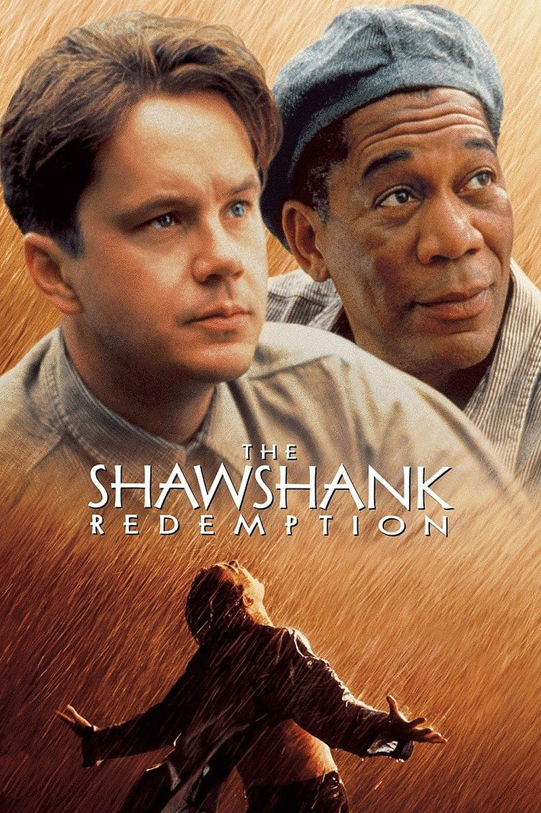
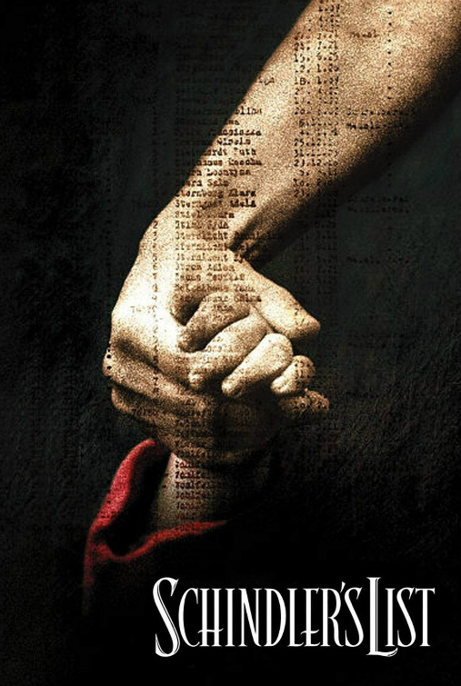
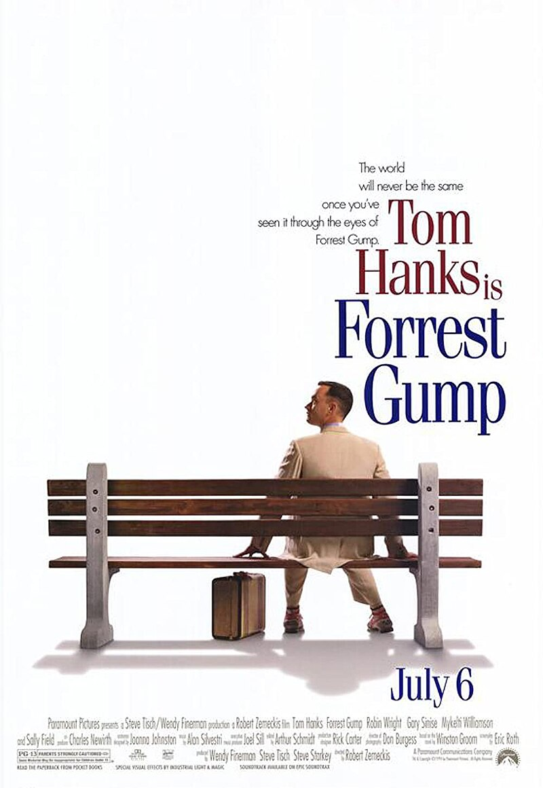
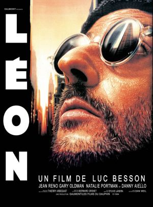

Najbolji filmovi svih vremena
- Bekstvo iz Šošenka
 Endi Dafres je mlad i uspešan bankar, čiji se život radikalno menja kada biva osuđen na doživotnu robiju zbog ubistva svoje žene i njenog ljubavnika. Priča je smeštena u četrdesete godine prošlog veka, i prati kako Endi uz pomoć svoj prijatelja Reda, provodi dane u zatvoru. Premda izgleda potpuno nalik drugima, Endi je sasvim neobičan zatvorenik. Uspeva da pobegne iz zatvora na vrlo originalan način, a time njegove pustolovine tek počinju...
- Šindlerova lista
 Oskar Šindler, biznismen, član nacističke stranke i nepopravljivi ženskaroš, dolazi u Poljsku, okupiranu od strane nacista, u potrazi za ekonomskim prosperitetom. Zapošljava Jevreje u svojoj fabrici, kako bi proizvodili za Treći rajh. Pošto je bio svedok stradanja Jevreja u krakovskom getu, ubrzo je uvidio zlo nacizma. Njegovi radnici dolaze pod teror nacističkog sadiste Amona Geta, pošto su odvedeni u logor. Uz pomoć svog računovođe Izaka Sterna, Šindler pravi listu "najpotrebnijih" Jevreja. On podmićuje njemačke vlasti i samog Geta i uspeva da oslobodi više od 1.000 Jevreja. Ovaj čuveni Spilbergov film je vizuelno veoma upečatljiv jer je rađen u crno-bijeloj tehnici. Šokantan, težak, emotivan i poučan, umetnički i veoma realno odrađen film.
- Forest Gamp
 Bez imalo muke, Forest uči Elvisa da igra, postaje zvezda američkog fudbala, upoznaje Džona Kenedija, Lindona Džonsona i Ričarda Niksona, biva odlikovan u Vijetnamskom ratu, pobeđuje kinesku reprezentaciju u stonom tenisu, učestvuje u otkrivanju afere "Votergejt", pretrčava Ameriku uzduž i popreko, i na kraju postaje prvi investitor u "Epl" kompjutere. Za sve to vreme, Forest ne zaboravlja Dženi (Robin Rajt Pen), devojku koju je zavoleo još kao dečak, a koja kroz šezdesete i sedamdesete godine prošlog veka ne prolazi tako glatko kao Forest.
- Dežurni krivci
 Pet dana pre eksplozije u Kvinsu je ukraden kamion koji je prevozio delove oružja i uhapšeno je pet osumnjičenih: Kint, lopov Makmanus,
poznat po nepredvidivom karakteru, mrzovoljni razbojnik Hokni, pametnjaković Fenster i Kiton, korumpirani policajac koji se okrenuo poštenom
životu i otvorio restoran. Tokom te pljačke neko je spomenuo da bi mogli da odrade jedan zajednički posao, pa Kint smišlja plan za jednostavnu
ali unosnu krađu dijamanata. Uprkos Kitonovim primedbama, oni uspešno obavljaju pljačku i odlaze u Los Anđeles da isporuče plen.
Međutim, od poslodavca dobijaju ponudu da završe još jedan brz posao, oni to prihvataju ali pljačka ne ide po planu i njih uskoro posećuje
Kobajaši, jedan od ljudi poznatog kriminalca Kajzera Sozea. Njega prati reputacija da je izuzetno nasilan, a priča se čak da je na pretnje
da će mu neko ubiti porodicu to uradio sam samo da bi dokazao da se ne plaši nikoga. Kada im Kobajaši predloži pljačku koju je osmislio Soze,
to u prvi mah deluje kao samoubistvo. Ali, o kakvom god riziku da se radi, Sozea još niko nije odbio...
Pet dana pre eksplozije u Kvinsu je ukraden kamion koji je prevozio delove oružja i uhapšeno je pet osumnjičenih: Kint, lopov Makmanus,
poznat po nepredvidivom karakteru, mrzovoljni razbojnik Hokni, pametnjaković Fenster i Kiton, korumpirani policajac koji se okrenuo poštenom
životu i otvorio restoran. Tokom te pljačke neko je spomenuo da bi mogli da odrade jedan zajednički posao, pa Kint smišlja plan za jednostavnu
ali unosnu krađu dijamanata. Uprkos Kitonovim primedbama, oni uspešno obavljaju pljačku i odlaze u Los Anđeles da isporuče plen.
Međutim, od poslodavca dobijaju ponudu da završe još jedan brz posao, oni to prihvataju ali pljačka ne ide po planu i njih uskoro posećuje
Kobajaši, jedan od ljudi poznatog kriminalca Kajzera Sozea. Njega prati reputacija da je izuzetno nasilan, a priča se čak da je na pretnje
da će mu neko ubiti porodicu to uradio sam samo da bi dokazao da se ne plaši nikoga. Kada im Kobajaši predloži pljačku koju je osmislio Soze,
to u prvi mah deluje kao samoubistvo. Ali, o kakvom god riziku da se radi, Sozea još niko nije odbio... - Profesionalac
 Matilda (Natalie Portman), dvanaestogodišnja Njujorčanka, živi tužan život sa porodicom. Njezin otac čuva drogu za korumpirana policajca Normana Stansfielda (Gari Oldman) i jedina je svetla tačka u životu nesretne devojčice njezin mlađi brat. Jednoga dana Stansfield i njegov tim osvete se njezinu ocu zbog nesuglasica i poubijaju celu porodicu. Preživela je samo Matilda, koja je bila u kupovini. Devojčica nalazi utočište u stanu komšije Leona (Žan Reno). Kada sazna čime se bavi njezin neobični komšija, zamoli ga da osveti njezina brata. Léon, koji nema iskustva sa očinstvom i prijateljskim vezama, čini sve kako bi Matilda izbegla nevolje, ali bezuspešno. Ubica ubrzo otkriva da može živeti, voleti i osećati, a korumpirani policajac čini sve kako bi uklonio svedokinju ubistva. Leon i policajac moraju se susresti…